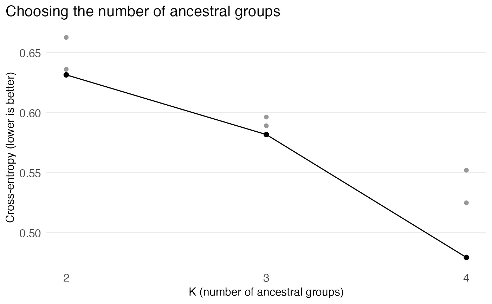
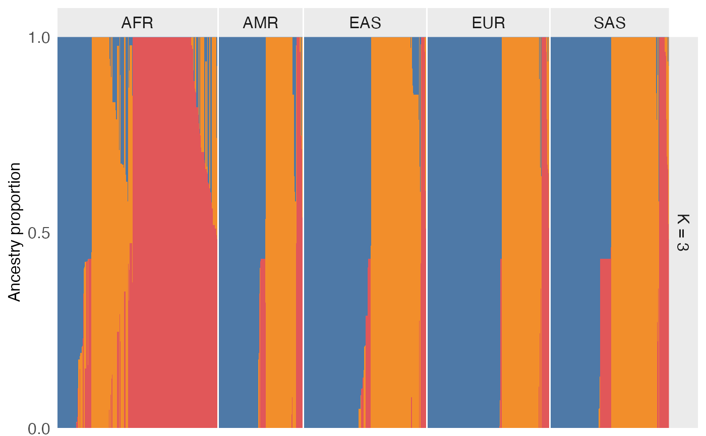

Runs an admixture analysis: it assumes that the people in the data descend
from K ancestral groups, and estimates what proportion of each person's
genome comes from each group. The calculation is done by the snmf()
function of the LEA package.
Value
An snpscape_admixture object: a list with
ancestry: a tibble with one row per person,Kand group, giving the estimatedproportionof ancestry (best run for eachKonly). Useget_ancestry()to extract it.cross_entropy: a tibble with the cross-entropy of every run.samples: the people analysed.
Details
What admixture analysis does
Imagine there were K ancestral populations, each with its own allele
frequencies at every SNP. Admixture analysis looks for the set of
ancestral frequencies, and the mixture of ancestral groups in each person,
that best explains the genotypes we see. The result for each person is K
proportions that add up to 1, usually drawn as a stacked bar (see
plot_admixture()).
The ancestral groups are statistical constructs, not real historical
populations, and the method finds K groups whether or not they exist.
Results also depend on which populations are included and how many people
each contributes. Treat them as a description of the structure in these
data, not a literal history.
Choosing K
We usually try a range of K values. For each, snmf leaves out a small
fraction of genotypes, then measures how well the model predicts them (the
"cross-entropy"; lower is better). A good K is one where the
cross-entropy stops dropping noticeably. See plot_cross_entropy().
Repeated runs
The method starts from random guesses and can get stuck in different
solutions, so each K is run reps times and the run with the lowest
cross-entropy is kept. Setting seed makes results reproducible.
Before you run it
Use filter_snps() with prune_ld = TRUE first: admixture analysis
assumes SNPs are independent. Larger numbers of SNPs, people and K
values take longer; a few hundred SNPs for all 2,504 people take seconds.
The ancestral groups are numbered arbitrarily by snmf. To make plots for
different K easier to compare, the groups are renumbered so that each
matches, as closely as possible, a group at the previous K.
Examples
# \donttest{
lct <- filter_snps(example_lct, min_maf = 0.05, prune_ld = TRUE)
adm <- run_admixture(lct, k = 2:4, reps = 3)
#> Running admixture for K = 2, 3, and 4 (3 runs each, 12 SNPs)...
plot_cross_entropy(adm)

plot_admixture(adm, k = 3)

# }